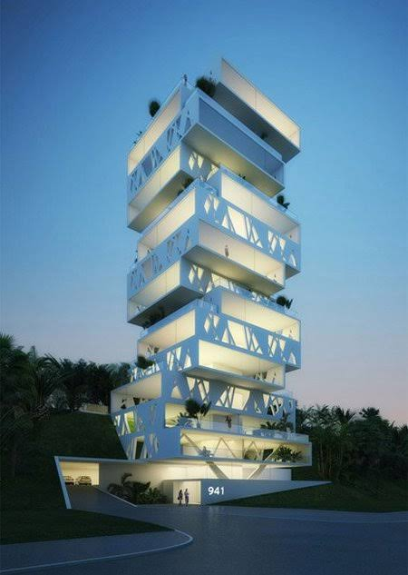

La arquitectura es el arte y la técnica de proyectar, diseñar y construir edificios y espacios para modificar el hábitat humano de manera funcional, segura y estética
Proyecto Arquitectura
Este proyecto consiste en crear un edificio de apartamentos de lujo, de 20 pisos, con ascensor, con zonas comunes y de 100 apartamentos individuales

Esta imagen es una visualización de como lucirá el proyecto
1. INTRODUCCIÓN Y MEMORIA DESCRIPTIVA
El presente proyecto define la estrategia de planeación, fases de ejecución y cronograma maestro para la edificación de una torre residencial vertical de 20 niveles. El proyecto albergará 100 unidades habitacionales exclusivas (con un promedio de 5 apartamentos por piso), complementadas con áreas comunes premium y un sistema de elevadores de alta velocidad diseñado para garantizar la eficiencia en el tráfico vertical. El tiempo estimado de desarrollo total es de 30 meses desde la etapa de diseño hasta la entrega final.
2. DESGLOSE METODOLÓGICO POR FASES
FASE I: PRE-CONSTRUCCIÓN, INGENIERÍA Y TRÁMITES (Mes 1 al Mes 6)
Esta fase establece la certeza jurídica, técnica y financiera del proyecto antes del movimiento de tierras.
• Estudios de Suelo y Geotecnia: Ejecución de sondeos profundos para determinar la capacidad de carga del terreno y diseñar la cimentación óptima frente a cargas vivas, muertas y eventos sísmicos.
• Diseño Ejecutivo Multidisciplinario: Desarrollo de la arquitectura de detalle, cálculo estructural del concreto armado, y planos MEP (Mecánicos, Eléctricos, Plomería y Telecomunicaciones).
• Permisología y Licencias: Obtención de licencias de construcción, dictámenes de impacto ambiental, factibilidades de servicios públicos e integración del fideicomiso inmobiliario.
FASE II: CIMENTACIÓN Y ESTRUCTURA PORTANTE (Mes 7 al Mes 16)
Etapa crítica de obra negra que define la velocidad y seguridad del proyecto.
• Excavación y Contención: Movimiento de tierras para sótanos de estacionamiento y estabilización de colindancias mediante muros pantalla o tablestacas.
• Cimentación Profunda: Construcción de una losa de cimentación masiva apoyada sobre pilotes profundamente enterrados en el estrato firme del suelo.
• Obra Gris Vertical: Edificación de los 20 niveles utilizando sistemas de encofrado industrializado y grúas torre. Se proyecta un ritmo de colado de un piso cada 12 días, culminando con el hito arquitectónico del Top-Out (vaciado de la losa del techo del piso 20).
FASE III: FACHADAS, ENVOLVENTES E INSTALACIONES TRONCALES (Mes 14 al Mes 22)
Superpuesta parcialmente con la estructura para optimizar los tiempos de entrega.
• Cierre Perimetral: Instalación de fachadas de vidrio termoacústico y cancelería de alta resistencia para garantizar la hermeticidad del edificio.
• Redes Matrices (MEP): Montaje de columnas montantes de agua potable, ductos de ventilación mecánica, sistemas centralizados de aire acondicionado, subestación eléctrica y redes contra incendios.
• Caja mecánicas de Elevadores: Preparación estructural, plomado y revestimiento del cubo de ascensores para la posterior instalación de rieles y maquinaria.
FASE IV: ACABADOS DE ALTA GAMA Y ÁREAS COMUNES (Mes 20 al Mes 28)
Enfoque absoluto en el detalle y la propuesta de valor de lujo del inmueble.
• Habilitación de Apartamentos: Trabajos de albañilería interior, seguidos por la colocación de pisos de mármol/madera, carpintería residencial fija, cocinas italianas integrales y sistemas de domótica.
• Zonas Comunes (Amenidades): Equipamiento del lobby de triple altura, paisajismo en áreas verdes, acondicionamiento del gimnasio, spa, salón de eventos y la construcción de la piscina infinity en el rooftop.
• Especialidad de Ascensores: Montaje de cabinas, motores de tracción síncrona sin engranajes y sistemas de control de tráfico inteligente para minimizar los tiempos de espera de los 100 residentes.
FASE V: COMISIONAMIENTO, CERTIFICACIÓN Y LOGÍSTICA DE ENTREGA (Mes 28 al Mes 30)
Garantía de calidad y transición al régimen condominal.
• Pruebas de Carga y Seguridad: Auditoría interna de todos los sistemas (presión de tuberías, caídas de voltaje, simulación de incendios y certificación de seguridad de los ascensores).
• Trámites de Habitabilidad: Recepción de las inspecciones municipales para la obtención del permiso de ocupación oficial.
• Proceso de Entrega (Punch List): Recorridos de calidad departamento por departamento junto a los propietarios para la firma de conformidad y entrega de llaves.